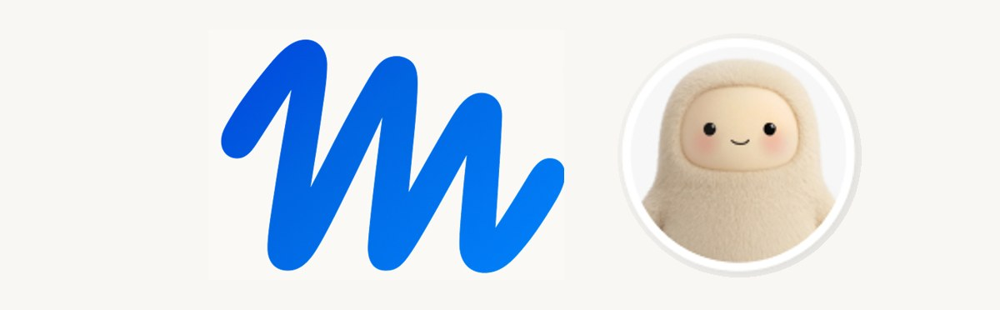
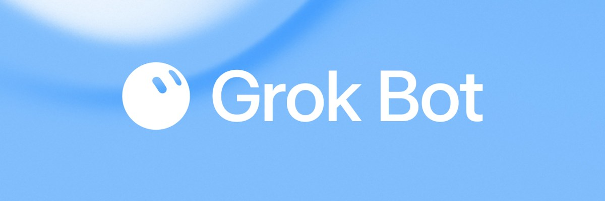

Занятие 4 · поток 6 · 1 октября 2026
ChatGPT Plus.
Всё из одного окна.
Чат отвечает. Работа делает.
Codex строит.

Чат отвечает. Работа делает.
Codex строит.

Чат, Работа, Codex
Кабинет для темы
Метод одной фразой
Почта, календарь, диск
По времени и по событию
Строитель на компьютере
 ChatGPTЧАТ · РАБОТА · CODEX
ChatGPTЧАТ · РАБОТА · CODEXОдин ChatGPT.
Три разных режима.
ChatGPTЧАТ · РАБОТА · CODEXСпросил и получил ответ. Быстрые вопросы, тексты, разбор одного документа.
Агент для длинной работы в несколько шагов. Доводит до готового файла.
Строит сайты и приложения, работает с папкой на вашем компьютере.
ChatGPTЧАТ · РАБОТА · CODEXchatgpt.com, вверху страницы переключатель «Чат» / «Работа».
Слева вверху выбираете ChatGPT или Codex. Внутри ChatGPT тот же переключатель.
Режим выбирается в списке вверху экрана.
Чаты обоих режимов лежат в одном списке, есть фильтр.
ChatGPTПРОЕКТЫКабинет для одной темы:
файлы и правила в одном месте.
ChatGPTНАВЫКИМетод, который живёт постоянно
и зовётся одной фразой.
ChatGPTПЛАГИНЫПропуск в ваши сервисы:
почта, календарь, диск, задачи.
ChatGPTЗАПЛАНИРОВАННЫЕ ЗАДАЧИОдин раз объяснили, что и когда.
Дальше приходит само.
ChatGPTЗАДАЧА ПО СОБЫТИЮПришло письмо.
Он уже разобрал и подготовил ответ.
 ChatGPTCODEX
ChatGPTCODEXСтроитель на вашем компьютере.
Входит в подписку Plus.
Работа доводит до готового файла. Codex строит приложения и работает с папкой на вашем компьютере.
Создаёт файлы, собирает сайты и мини-приложения, запускает и проверяет.
Работает в папке, которую вы ему открыли.
Отдельно платить и регистрироваться не нужно.


Как с вами общаться. Вставляется один раз и действует во всех папках.
Встраивает бригаду из четверых помощников.
Ничего не сработает. Смотрите подпись над рамкой в шпаргалке.

Цель, план, проверка. Не даёт бросаться делать вслепую.
Свежие инструкции сервисов, а не память годовой давности.
Думает по шагам на сложных задачах.
Открывает сайт и проверяет, что всё работает.
OpenAI · ChatGPTПостоянный агент: цель ставите один раз, дальше он работает сам.

Личный агент, который не отвечает на вопросы, а делает работу.

Команда агентов, которые всегда на связи.